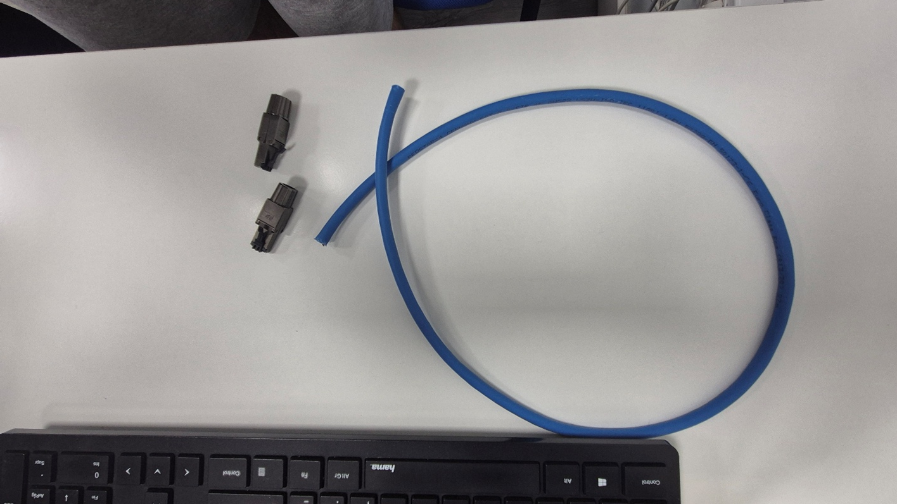
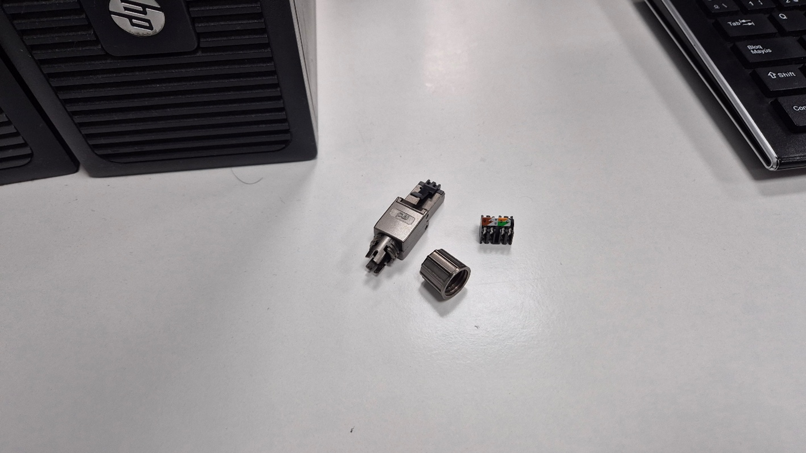
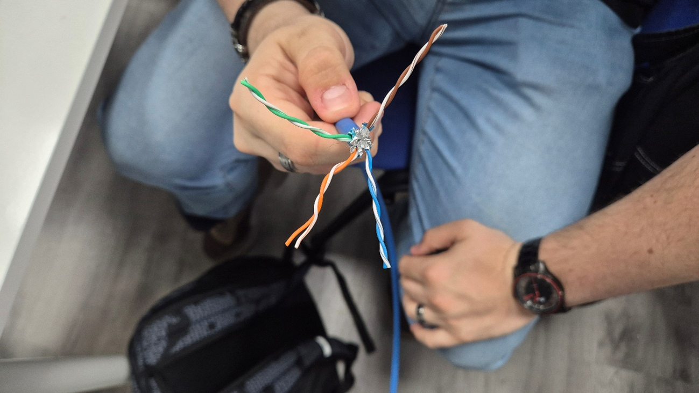
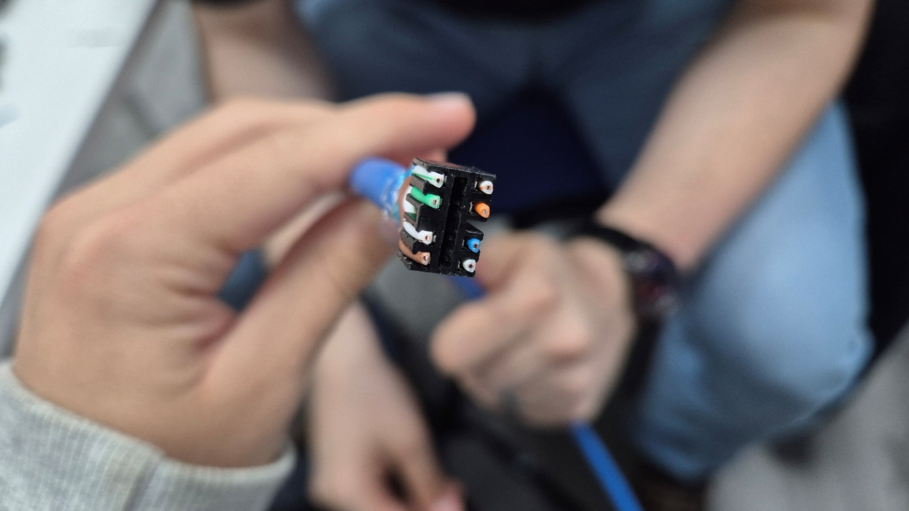
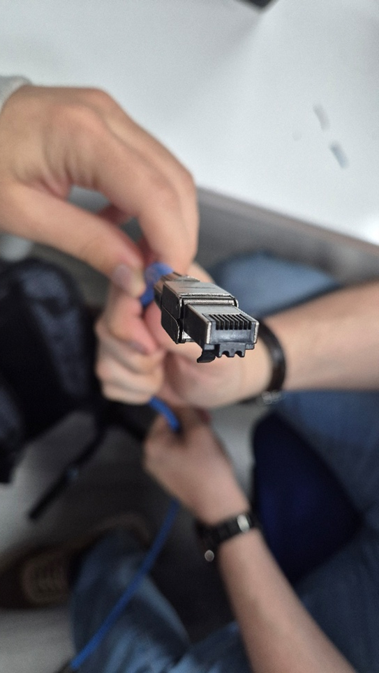
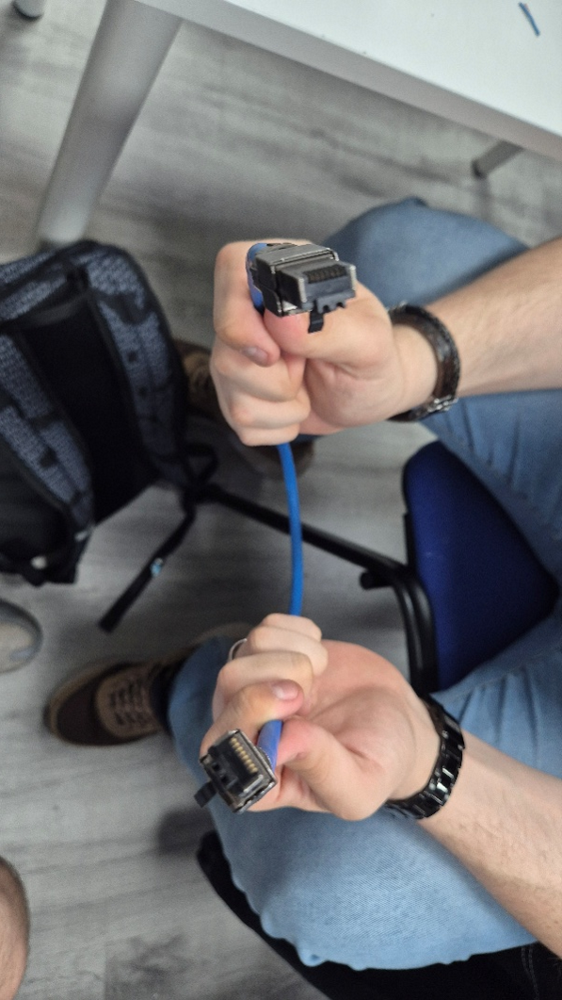

Cable CAT 8 – Proceso de creación
Deberemos seguir los siguientes pasos
Materiales
- Los materiales a usar seran los siguientes


Pasos
- Abrir el cable
- Ordenar pares
- Crimpar
- Repetir en la otra punta



